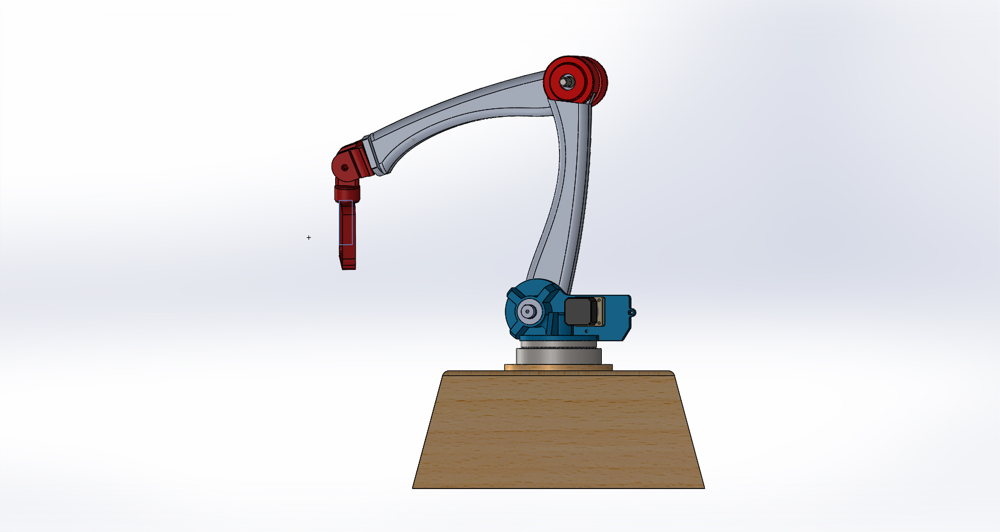
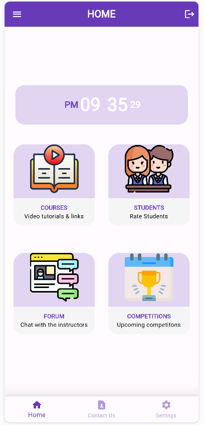
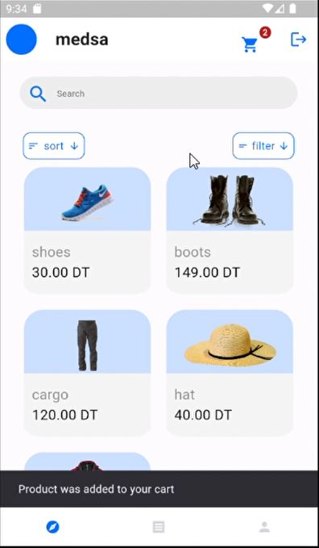

MAY, 2023
I employed OpenCV to apply the Haar Cascade method for face detection. After that, I applied Mathematics by
utilizing the Local Binary Patterns algorithm to train the detected face data and perform facial recognition, providing
an accuracy percentage and a label of the predicted person as the outcome

A chatbot prototype that can understand human language and generate contextually relevant responses using PYTORCH framework and Natural language processing.

Design of a robotic arm with SolidWorks, Implementation of specific calculations for precise gear ratios, creation of components such as planetary gears and
pulleys for the actuator and then assembling them, classification of robust materials capable of withstanding
significant torsion forces, research for specific motors such as brushless DC motors and stepper motors, chosen for
their precision and torque characteristics that allow them to withstand external forces.
Implemented a script based on trained model to interact with hand gestures with both hands and act upon the specific gesture based on hand gesture recognition

In IEEE star program competition, I was responsible for creating a mobile applicaiton to be provided for teachers in a rural high school where they will receive tutorials about robotics and AI to learn and teach their students.

Based on a UI model from Figma. I coded a signup page, login page, and logout page using Firebase. I also created a
page where users can explore products and search for specific products, each with its own detail page. When users
choose products, they are added to a cart page where users can generate an invoice in PDF format, save it, and add
it to a list of invoices that can be modified or deleted.